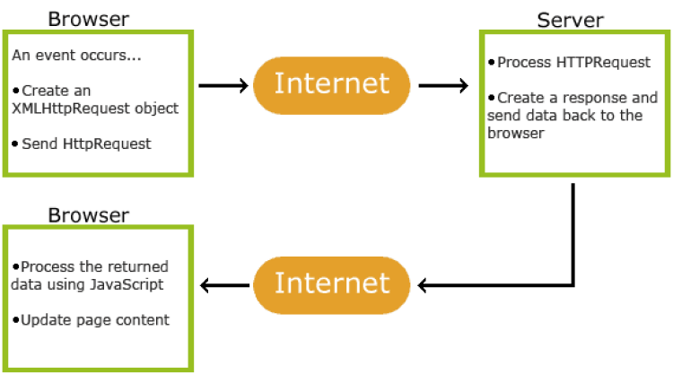

AJAX signifie Asynchronous Javascript And XML. Il ne s’agit pas d’un langage de programmation. C’est une combinaison de requêtes (request) intégrées au navigateur et de JavaScript et HTML DOM pour afficher ou utiliser les données. L’acronyme peut prêter à confusion. Malgré son nom, AJAX peut transporter des données XML, mais également d’autres formats de texte comme JSON ou txt.
Source : w3schools
Pour répondre à cette question, voici un schéma.
Un événement a lieu dans le navigateur, une requête HTTP est créée et envoyée au serveur. Le serveur traite la requête HTTP, génère une réponse et envoie les données en retour au navigateur. Les données envoyées par le serveur sont lues par JavaScript et la page est mise à jour.
La pierre angulaire d’AJAX est l’objet XMLHttpRequest. Tous les navigateurs modernes le prennent en charge. Il peut être utilisé pour échanger des données avec un serveur en arrière-plan. Cela signifie qu’il est possible de mettre à jour des parties d’une page web, sans recharger la page.
Aussi, il faut savoir que pour des raisons de sécurité les navigateurs n’autorisent pas l’accès entre les domaines. Cela signifie que la page web et le fichier XML, ou texte, qu’elle tente de charger doivent se trouver sur le même serveur. Si vous souhaitez charger les fichiers XML, ils doivent se trouver sur votre propre serveur.
Également, l’objet XMLHttpRequest peut avoir différentes méthodes. Voici un tableau pour résumer ces méthodes :
| Méthode | Description |
|---|---|
| new XMLHttpRequest() | Crée un nouvel objet XMLHttpRequest |
| abort() | Annule la demande en cours |
| getAllResponseHeaders() | Renvoie les informations d’en-tête |
| getResponseHeader() | Renvoie une information spécifique d’en-tête |
| open(method, url, async, user, psw) |
Spécifie la demande method : la requête de type GET ou POST url: l’emplacement du fichier async : true(asynchrone) ou false(synchrone) user : nom d’utilisateur facultatif psw : mot de passe facultatif |
| send() | Envoie la requête au serveur Utilisé pour les requêtes GET |
| send(string) | Envoie la requête au serveur Utilisé pour les requêtes POST |
| setRequestHeader() | Ajoute une étiquette/valeur à l’en-tête à envoyer |
L’objet XMLHttpRequest a également différentes propriétés. Voici un tableau pour les résumer :
| Propriété | Description |
|---|---|
| onreadystatechange | Définit une fonction à appeler lorsque la propriété readyState change |
| readyState |
Contient le statut de XMLHttpRequest 0 : requête non initialisée 1 : connexion au serveur établie 2 : requête reçue 3 : traitement en cours 4 : requête achevée et la réponse est prête |
| responseText | Renvoie les données sous forme de chaîne |
| responseXML | Renvoie les données sous forme de données XML |
| status |
Renvoie le numéro d’état d’une requête 200 : « OK » 403 : « Forbidden » 404 : « Not Found » Pour une liste complète, cliquez sur ce lien : HTTP response status codes |
| statusText | Renvoie le texte d’état (par exemple « OK » ou « Not Found ») |
Pour envoyer une requête à un serveur, nous utilisons les méthodes open() et send() de l’objet XMLHttpRequest, en utilisant soit GET ou POST. Il faut savoir que GET est simple et plus rapide que POST, et peut être utilisé dans la plupart des cas. Pour autant, il faut toujours utiliser POST lorsqu’un fichier en cache n’est pas une option (mettre à jour un fichier ou une base de données sur le serveur), envoyer une grande quantité de données au serveur (POST n’a pas de limitation de taille), et envoyer des entrées utilisateur (qui peuvent contenir des caractères inconnus). POST est plus robuste et sécurisé que GET.
Dans cet exemple, à partir des éléments que nous avons vus au-dessus, vous devez effectuer une requête POST avec l’objet XMLHttpRequest. Dans ce cas, vous allez créer un fichier .txt et le "consommer". Les données du fichier .txt devront apparaître en cliquant sur un bouton. Aussi, il faudra que la requête soit asynchrone et ajouter la fonction "onreadystatechange". Pour cela, il faudra vous référer au tableau sur les propriétés de l’objet XMLHttpRequest.
Explication :
See the Pen Untitled by OpenSpirit (@OpenSpirit) on CodePen.
See the Pen Untitled by OpenSpirit (@OpenSpirit) on CodePen.
See the Pen Untitled by OpenSpirit (@OpenSpirit) on CodePen.
Lien ReplitSalut, je m’appelle Charles, j’ai 34 ans et j’habite Paris.
Aussi, j’apprends AJAX.
Les requêtes XMLHttpRequest synchrones (async = false) ne sont pas recommandées parce que JavaScript va s’arrêter jusqu’à ce que la réponse du serveur soit prête. Si le serveur est occupé ou lent, l’application "freeze" s’arrête. C’est pour cette raison que cette requête est en train d’être supprimée de la norme web.
Les versions d’Internet Explorer antérieures à IE 10 ne prennent pas en charge l’objet XMLHttpRequest, qui est la base des requêtes AJAX.
Dans cette vidéo, nous allons voir comment obtenir une réponse du serveur à travers différents exemples.
AJAX peut être utilisé de façon interactive avec les fichiers XML. C’est ce que nous allons voir dans cette vidéo.
Nous avons vu dans cette vidéo comment afficher les données d’un fichier .xml sous forme de tableau. Ainsi, les possibilités pour créer des applications interactives en utilisant XML, HTTP, DOM et JavaScript sont vastes.